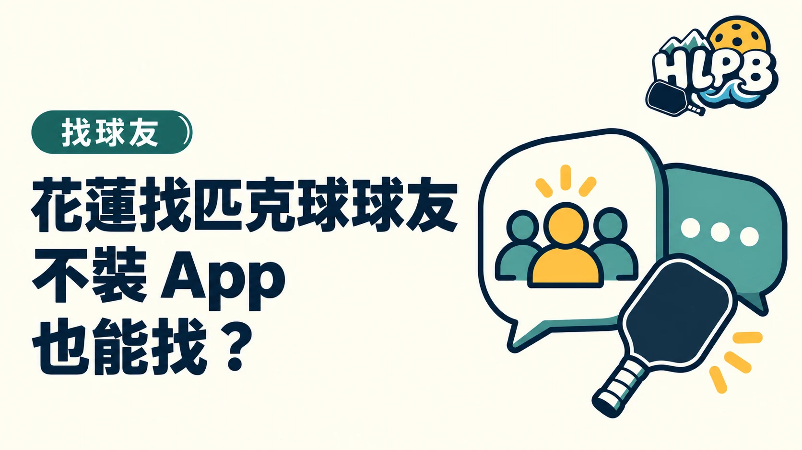

不先安裝 App，也可以從公開網頁與原始公告開始找花蓮匹克球資訊。但能瀏覽場次，不等於能用同一個網頁完成所有報名步驟。
入口不同，能做的事也不同
| 入口 | 可先取得的資訊 |
|---|---|
| PickleTown 公開揪團頁 | 瀏覽公開場次；加入依平台提示下載 App |
| HLPB 揪打球頁 | 查找已整理的聯絡入口 |
| HLPB 活動頁 | 由原始活動連結核對參加方式 |
PickleTown 的公開頁面明確區分瀏覽與加入。列表未必隨時有花蓮場次，不應因為今天看到外縣市場次，就推定所有功能或名額都適用花蓮。
不想安裝，還能查什麼？
可先看主辦者公開的報名方式：有些使用表單，有些透過社群或聯絡窗口。HLPB 只提供找入口的路徑，不替各單位保證一定接受某種報名方式，也不要求所有人加入同一平台。
找到聯絡人後，怎麼說明需求？
HLPB 建議一次說清自己的程度、可參加時間、是否需要借拍，再問是否有適合場次。先確認原公告的名額與費用，不以群組人數判斷本場是否額滿。
正式確認前保留活動原文與日期。群組邀請只是聯絡入口，還是要另外確認哪一場已報名成功。
內容更新：2026-10-20｜資料來源：公開原始資料；HLPB 本站資料；HLPB 本站資料
返回文章列表